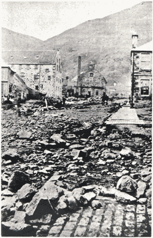

1200's - 1800's
We will start in 1261 when the land was taken by Alexander III of Scotland from Aleumus de Meser because the owners were not meeting the demand of services required in order to keep in power of the land.
The land was held by the Douglas family until 1483 but then was sold to Sir William Alexander of Menstrie in 1634.
The land was then passed between family to family in 1644 to 1840, changing ownership every few years
28 August 1877
The burn in Tillicoultry burst its banks on the 28th August 1877. After having 12 hour of consistent rain fall.
As a result of the burn bursting flooding was widespread throughout nearby towns. Crops and building were destroyed and workers in mills were trapped as they could not safely exit their workplace. Houses and shops in the highstreet were under as much as 3 feet of water.
Over £2,000 was required to repair the burn, atleast 2 people working in mills died and the village was deprived
of all gas and water for several weeks after the flood, taking a while to repair this.
The flood was devistating for the village resulting in several deaths and major inconveniences
Tillicoultry has became a popular village which has resulted in most of the old industry buildings, such as milling to be removed and revamped as citizen accomodation. The railways throughout Tillicoultry and Devonside has been removed and 2 large-scale shopping outlets have been opened.
The village now has a 400 pupil primary school and a small ski-slope next too it.
All information found on the Tillicoultry Wikipedia
{kind=link}